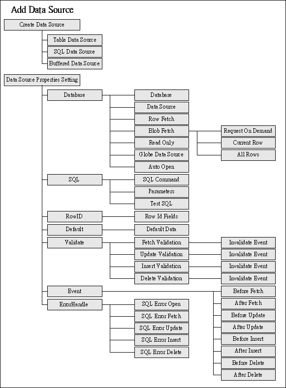

|
3.2 フォームデザイン (form design) フォームデザイン手順 (form design procedure)
フォームプロパティ設定 (form properties setting) 【フォームプロパティ設定】キーをクリックし，フォームプロパティ設定でニーズによってフォーム表示レイアウトと作業フロー、イベントを設定します。 デザインのアイテム (design tips)
データソース (data source) はアプリ (application)とモジュール (form) プロセス操作のために，データテーブルに連結する資料構築 (table structure data)です。データソース (data source)は源によって三種類に分けられています：テーブルデータソース (Table data source)、SQL データソース (SQL data source)、Buffer データソース (Buffer data source)，デザインナーはデータソースによる設定に基づいてフォームにデータソースを追加します。  デザイン提示 (design tips)
レイアウトコンポーネント (layout components) レイアウトコンポーネントにつき，１．ツールバーから選択 (drag & drop toolbar components)，２．データフィールドからドラッグ＆ドロップ (drag & drop data field)，３．データソースからドラッグ＆ドロップ (drag & drop data source)。 レイアウトコンポーネント (layout component)、コンポーネントセレクト、移動、編集 (select、move、edit components)、コンポーネント整列 (alignment)、コンポーネント複写、コピー、貼り付け (duplicate、copy、paste)。 デザイン提示 (design tips)
コンポーネントプロパティ設定 (component properties setting)
デザイン提示 (design tips)
イベントフロースキーマ (event flow schema)はデザインナーのため新規 (create)、編集 (edit)、ビュー(view) イベント (event object)，分析 (analysis)、企画 (route) 、調整 (adjust) イベントフロー (event flow)及び実行テストとイベント中断 (interrupt)の設定を提供します。 新規イベント (create new event)、編集、削除、複写、コピー、イベント貼り付け (edit, delete, duplicate, copy, paste event)。
イベントフロー (event flow)はユーザとシステム (system flow) によって駆動されます。コンポーネントとデータソース設計を行う時に，ユーザの行為に基づいてリンク (link) イベント，イベントフロー (event flow)を起動し，ユーザへ作業の反応 (respond) を行います；システムによるイベントの起動は，例えば：フォームオープン最中，順序によってデータソースオープン前イベント (before data source open event)及びデータソースオープン後イベント(after data source open event)，フォーム閉じる直前，最終イベント (final event)起動。
フォームデバッグと実行 (debug and execute form) jLIVE Builder™ はオブジェクト指向 (OOP) とイベントドライブ (event-driven) がアプリケーション開発の中核コンセプト (concept)であり，オブジェクトとイベントが jLIVE Builder™ のデバッグ(bug free)で処理される時に ，エラーがあれば，イベントルート (event route)、システム変数 (system variable)、プロセスデータ配送 (computed and transferred data)の部分に生じます。そのため、 jLIVE Builder™ はフォームデザイン段階，イベント中断 (event interrupt) 機能を提供し、システムパラメーター、プロセスデータ配送において，デザインナーによる監視及び修正が可能です。 デザイナーはイベントフローの中，イベント実行前後に中断ポイントを設定します；実行テストの時，トラブルシューティングしやすい為，一時にこの中断ポイントを取り消します。
Copyright © 2001~ 2004 Probe Technology . All Rights Reserved. Questions, comments, and suggestions to Service@probe.com.tw |